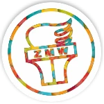
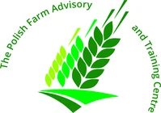
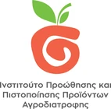
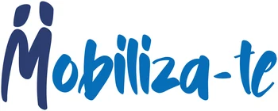
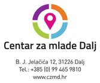

Circularity
Cut waste through recycling, repair and reuse.
Erasmus+ youth project · 2026 to 2028
POV helps young people and youth workers sort waste correctly, repair and reuse more, and find the nearest recycling point in their own city. It does this with AI-supported video tutorials, a game, and an interactive map.
The challenge
Cities produce more waste each year, and many residents are unsure what can be recycled, where to take it, or how to sort it. Young people with fewer opportunities have even fewer ways to take part.
What POV stands for
The logo joins city, nature and the loop of circular thinking. The same four values guide the learning materials, the app and the events.
Cut waste through recycling, repair and reuse.
Support environmentally responsible choices, every day.
Involve young people, youth workers and local stakeholders.
Make environmental education practical, accessible and engaging.
Objectives
Promote repair, reuse and recycling. Give youth workers practical skills to guide young people towards less waste and more sustainable habits.
Build digital skills for inclusive learning. Equip youth workers, young people and partner organisations with AI-supported and game-based tools, especially for those with fewer opportunities.
Raise youth involvement in local waste management. Young people map recycling points, help shape educational content and drive local waste reduction.
Connect sectors and regions. Bring together youth workers, communities, local authorities, waste management companies and educational institutions to create solutions that can scale.
Learn through transnational mobility. Build sustainability competences through exchange across countries, with Youthpass recognition for participants.
The app
One app to learn what goes where, watch how to repair or reuse, play through real situations and find a recycling point nearby. Try a short round on the phone.
Drink bottle, rinsed
Where does it go?
Recycling points near you. In the real app, tapping a point opens item-specific guidance for your city.
Illustrative demo of the idea. Real sorting rules differ by city, and the app will follow each partner city's local system.
Expected results
AI-driven, gamified content on repair, reuse, recycling and waste reduction, tested with partners, youth workers and young people before launch.
Google Maps integration that guides users to local recycling points and gives item-specific sorting instructions in the partner cities.
A five-day learning mobility in Croatia for 25 youth workers, certified with Youthpass, so they can lead workshops in their own communities.
Partner coordination, stakeholder engagement, local multiplier events and a sustainability plan that keeps the app and materials alive.
Timeline
Local research comes first. The learning materials follow, then the app, the pilot with youth workers and young people, and the final events.
Planned dates from the project plan. Each month is one column, from September 2026 to August 2028.
Partners
Youth work, rural development, agri-food and community action meet in one partnership.

One of the oldest and largest youth organisations in Poland. For over 95 years it has worked with young people from rural areas, small towns and semi-urban communities.
Coordinates the project and hosts the pilot testing event in Poland.
zmw.pl
A not-for-profit training centre in non-formal education, sustainability, green skills and digital learning solutions.
Leads development of the interactive recycling map.
farm-advisory.eu
A non-profit organisation that provides young people with educational material on environment and agriculture.
Leads the app infrastructure and the gamified learning content.

A youth association founded in 2020 in Ovar, bringing young volunteers together for social and environmental action.
Leads the action plan, the waste reduction guide and the online presence.
mobiliza-te.pt
A youth centre in eastern Croatia where young people from different backgrounds learn, volunteer and take part in community and environmental projects.
Hosts the five-day learning mobility for 25 youth workers.